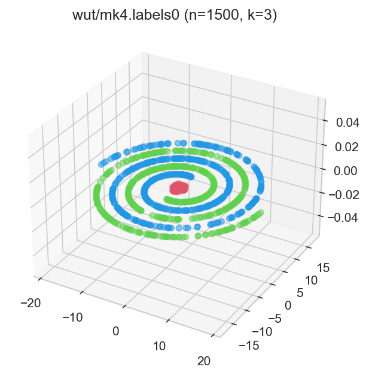
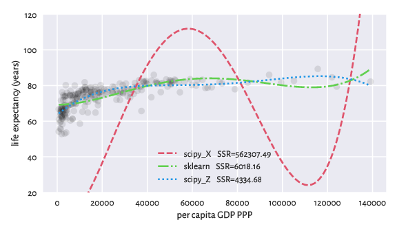

Data
Clustering
There is no, nor will there ever be, single best clustering algorithm. Still, we would like to be able to separate the wheat from the chaff: to pinpoint grouping methods that are well-performing on certain task types as well as filter out the systematically disappointing ones.
However, it is not rare for research papers/graduate theses to consider only a small number of datasets. We regularly come across the same 5–10 test problems from the UCI database. This is obviously too few to make any evaluation rigorous enough.
Other authors propose their own datasets, but do not test their methods against other benchmark batteries. This might lead to biased conclusions.
This is why I started a project that aims to:
aggregate, polish, and standardise the existing clustering benchmark batteries referred to across the machine learning and data mining literature,
introduce new datasets of different dimensionalities, sizes, and cluster types,
propose a consistent methodology for evaluating clustering algorithms.
Links:
Authors: Please test your new algorithms against all the datasets listed therein and submit the raw results they generate.
Reviewers: Please ask the authors to verify their proposals against this or any other large benchmark battery.
Researchers: Do you have any interesting additions to the benchmark battery? Contributions are welcome.
Teaching
Here are some datasets I use for Teaching/Training data wrangling/modelling skills.
Remember that, in real life, most datasets are boring and there’s rarely anything of significance therein. It is usually not your fault if you fail to find a dataset fails to provide sufficient evidence for featuring anything “mind boggling”.
If your manager/thesis supervisor/client forces you to squeeze them too hard or to start cherry picking, it is your ethical duty to say no to this. The reproducibility/ replication crisis in science is real. This rat race is simply unsustainable.
Also, you should study maths in order to understand the limitations of the methods/models you use. Check out my open-access textbook Minimalist Data Wrangling with Python to learn more.